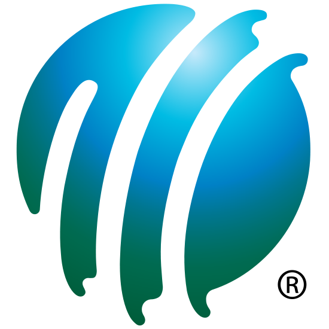
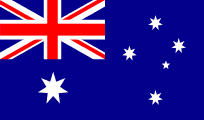
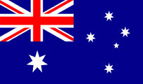
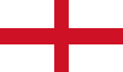
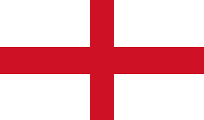
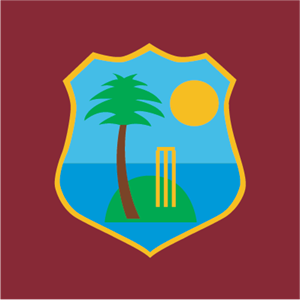
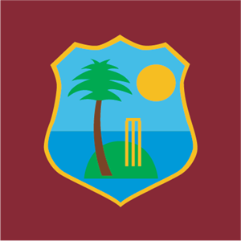

Membership
Cricket is governed by the International Cricket Council (ICC). The ICC enforces membership levels. The two categories are:
- Permanent Members
- Afghanistan
- Australia
- Bangladesh
- England
- India
- Ireland
- New Zealand
- Pakistan
- South Africa
- Sri Lanka
- West Indies
- Zimbabwe
- Associate Members
The images to the left represent the countries that are permanent members. Currently, there are 12 members in this category with an additional 90+ associate members aiming to be promoted to full member status. Ireland and Afghanistan were promoted as recently as June, 2017.

 

 



 
